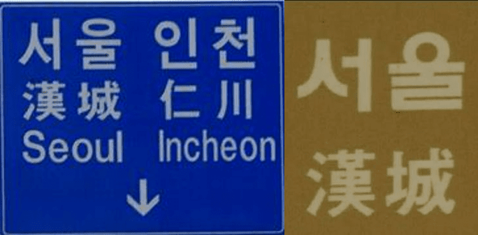
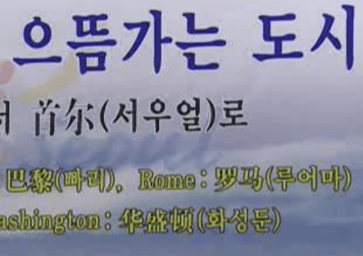
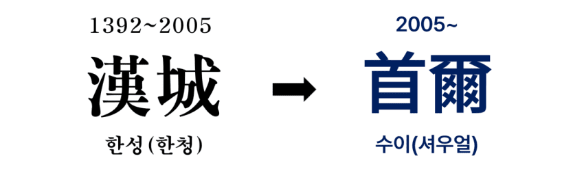
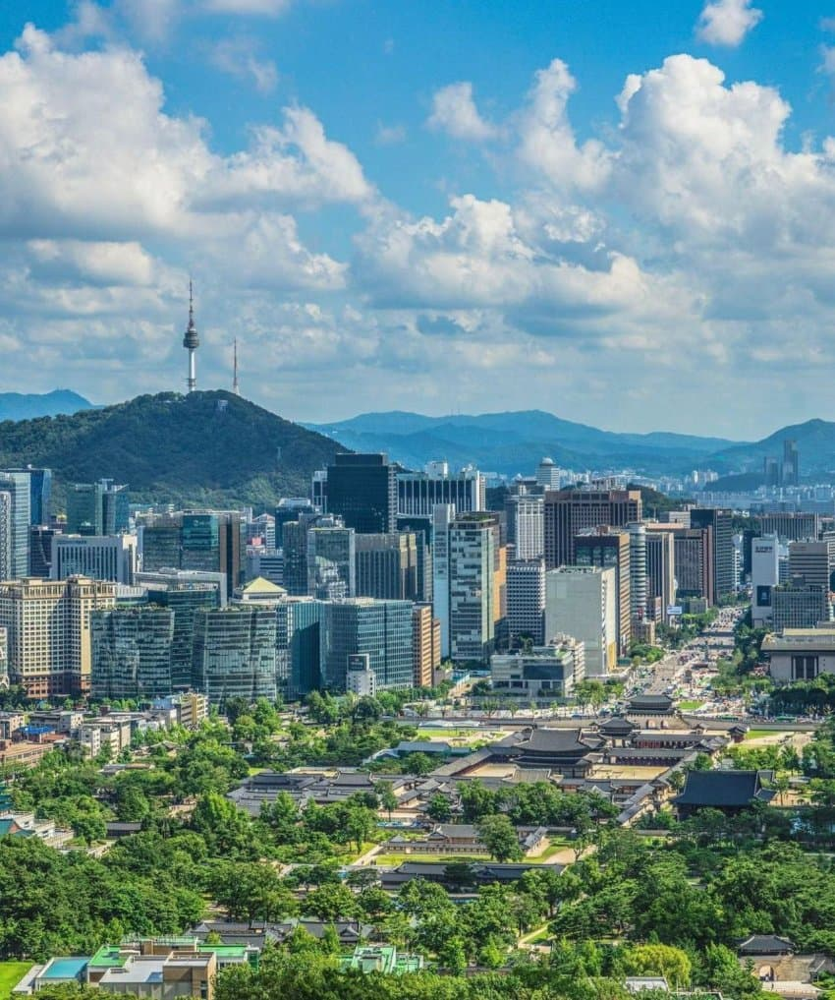

중화권에서는 서울을 ’서우얼(首爾, 수이)‘이라고 부른다
이 뜬금없는 이름은 어디서 나왔는지 알아보자

2005년 이전까지
중화권(중국•대만•홍콩•싱가포르 등)에서는
서울을 한청(漢城, 한성)이라고 불렀다.
서울의 조선시대 이름 맞다 ㅇㅇ
한자로는 ‘서울’이라는 순수 한국어를 표현할 수 없어서
조선시대부터 부르던 이름을 계속 써 온 것이다.
서울대로 가야 할 소포가 한성대학교로 가는 등
은근 혼란이 잦은 이름이었다고 한다.

2005년, 서울시는 이미지 쇄신과 혼란 방지를 위해
서우얼(首爾)이라는 새 이름을 만들고
중화권에 한성 대신 서우얼을 써 달라고 요청한다.
하지만 중화권 민간에서는
’서우얼이라는 노근본 이름은 머고?
한성 ㅈㄴ 역사깊고 근본 개지리는데 왜 바꾸지??‘
라며 반응이 별로 안 좋았다.
하지만 중국 인민일보와 정부에서 ‘서우얼’을 사용하며
민간에도 점차 서우얼이 퍼져 나갔고
지금은 중국 대만 홍콩 및 화교세계에서 모두 정착했다.

서우얼은 ‘으뜸가는 도시‘라는 뜻을 가지고 있고
발음 역시 ’서울‘과 비슷하다고 하여 채택되었다.
또다른 후보는 중경(中京)이었다 ㄷㄷ
중국 북경과 일본 동경 사이에 있는
동아시아의 중심이라는 개쩌는 이름이다
하지만 서울 발음이 연상되지 않아서 패배했다
지금도 중화권은 옛 서울을 ‘한성’이라고 부른다.
1995년 대한민국 서울을 배경으로 한
중국의 웹소설 ‘한성왕사 1995’가 대표적 예시다.
또 1988 서울올림픽도 여전히 ‘한성올림픽’으로 부른다.
그래서 중화권에서는
‘2005년에 한성특별시가 서울특별시로 바뀌었다’
고 착각하는 경우도 있다고 한다

끗
댓글
수집 당시 댓글 94개
ㅇㅇ · 11.11 19:18:52
분탕용깡계 · 11.11 19:20:45
· ㅇㅇ · 11.13 19:25:54
· ㅇㅇ · 11.13 19:28:58
ㅇㅇ · 11.11 19:21:27
· ㅇㅇ · 11.11 19:22:54
· ㅇㅇ · 11.11 19:23:21
· ㅇㅇ · 11.11 19:25:14
· ㅇㅇ · 11.11 19:26:00
· ㅇㅇ · 11.11 19:27:04
· ㅇㅇ · 11.11 19:30:00
· ㅇㅇ · 11.13 19:17:43
대
명박
ㅇㅇ · 11.11 19:22:11
· ㅇㅇ · 11.12 04:28:25
· ㅇㅇ · 11.13 19:18:11
유깡술 · 11.11 19:22:54
ㅇㅇ · 11.11 19:24:03
· ㅇㅇ · 11.11 21:11:40
소통해요 · 11.11 19:29:03
· ㅇㅇ · 11.11 20:31:13
ㅇㅇ · 11.11 19:30:06
요격기 · 11.11 19:33:36
ㅇㅇ · 11.11 19:37:42
ㅇㅇ · 11.11 19:37:50
· ㅇㅇ · 11.11 19:38:36
· ㅇㅇ · 11.11 19:38:49
· ㅇㅇ · 11.11 19:40:23
· 이지하 · 11.11 20:54:00
· ㅇㅇ · 11.11 23:37:53
· ㅇㅇ · 11.11 23:58:14
ㅇㅇ · 11.11 19:40:55
뭐야돌려줘요 · 11.11 19:41:45
싱갤용 · 11.11 19:41:46
디비자 · 11.11 19:47:52
· ㅇㅇ · 11.11 20:10:27
수류탄이야 · 11.11 19:57:48
ㅇㅇ · 11.11 20:05:43
ㅇㅇ1557 · 11.11 20:14:55
· ㅇㅇ · 11.11 20:25:03
· ㅇㅇ1557 · 11.11 20:27:28
· ㅇㅇ · 11.13 19:21:22
ㅇㅇ · 11.11 20:23:36
· ㅇㅇ · 11.11 20:51:11
ㅇㅇ · 11.11 20:58:49
· ㅇㅇ · 11.11 21:36:48
맥스웰테슬라 · 11.11 21:10:55
· ㅇㅇ · 11.11 22:17:10
· ㅇㅇ · 11.12 10:15:38
메가우츠보트 · 11.11 22:17:35
낭만원툴 · 11.11 22:40:14
10콜맨 · 11.12 02:14:51
ㅇㅇ · 11.12 07:29:56
· ㅇㅇ · 11.13 19:25:35
ㅇㅇ · 11.13 19:16:43
ㅇㅇ · 11.13 19:16:59
ㅇㅇ · 11.13 19:17:56
찬스킴 · 11.13 19:17:59
모하메드압두르후세인 · 11.13 19:18:31
· 모하메드압두르후세인 · 11.13 19:19:07
ㅇㅇ · 11.13 19:19:04
ㅇㅇ · 11.13 19:19:20
Adriel · 11.13 19:20:05
ㅇㅇ · 11.13 19:20:11
ㅇㅇ · 11.13 19:20:12
ㅇㅇ · 11.13 19:20:24
ㅇㅇ · 11.13 19:20:32
원갈이 · 11.13 19:20:34
ㅇㅇ · 11.13 19:20:38
· ㅇㅇ · 11.13 19:26:15
ㅇㅇ · 11.13 19:20:39
ㅇㅇ · 11.13 19:20:54
· ㅇㅇ · 11.13 19:21:08
· ㅇㅇ · 11.13 19:21:32
· ㅇㅇ · 11.13 19:21:39
ㅇㅇ · 11.13 19:21:50
· ㅇㅇ · 11.13 19:22:05
ㅇㅇ · 11.13 19:22:20
바쇽 · 11.13 19:23:03
ㅇㅇ · 11.13 19:23:16
ㅇㅇ · 11.13 19:23:35
ㅇㅇ · 11.13 19:23:49
ㅇㅇ · 11.13 19:23:55
알카 · 11.13 19:24:17
ㅇㅇ · 11.13 19:25:22
· 겐쉰프 · 11.13 19:27:39
ㅇㅇ · 11.13 19:25:49
· ㅇㅇ · 11.13 19:25:55
· 겐쉰프 · 11.13 19:28:14
ㅇㅇ · 11.13 19:25:57
ㅇㅇ · 11.13 19:26:06
ㅇㅇ · 11.13 19:26:29
· 겐쉰프 · 11.13 19:28:48
나쁜말안돼 · 11.13 19:28:44
ㅇㅇ · 11.13 19:28:59